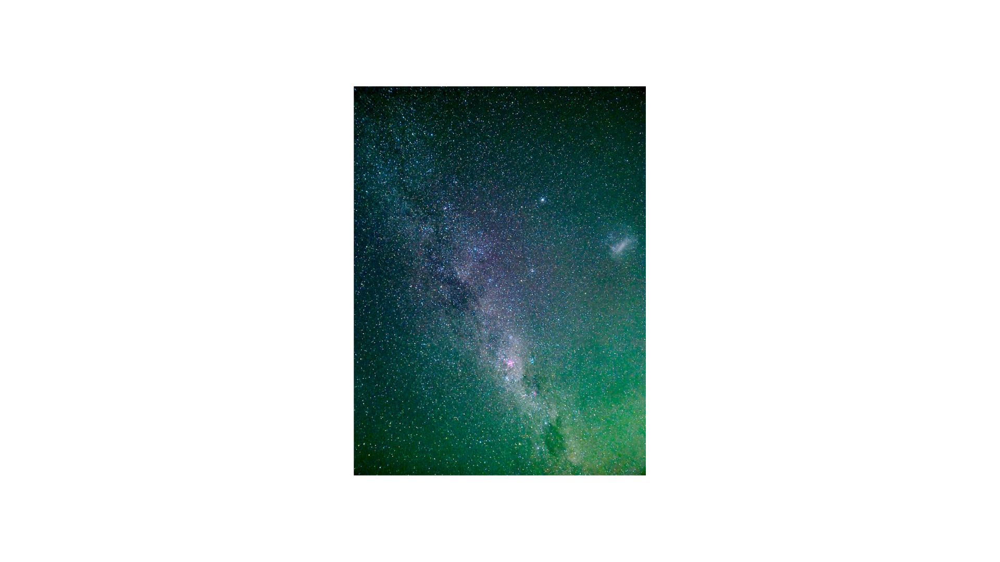

Location is everything when it comes to stargazing. Light pollution is a problem in cities caused by the excess of artificial lights. It is very important to go to a place where there are no major cities or infrastructure that emits light. Rural areas are the best for stargazing since there is no major source of light nearby, and the light pollution is zero or near zero there. An example of a stargazing spot with moderate light pollution while still being close to the city of Sydney is Palm Beach. When navigating through low-light pollution areas, you should use red light since it preserves the natural human vision way better than normal white flashlights.
This photo on the right-hand side was taken from a Samsung S24 at Palm Beach. Can you imagine that? Beginners just need a phone that has a good camera to start stargazing
